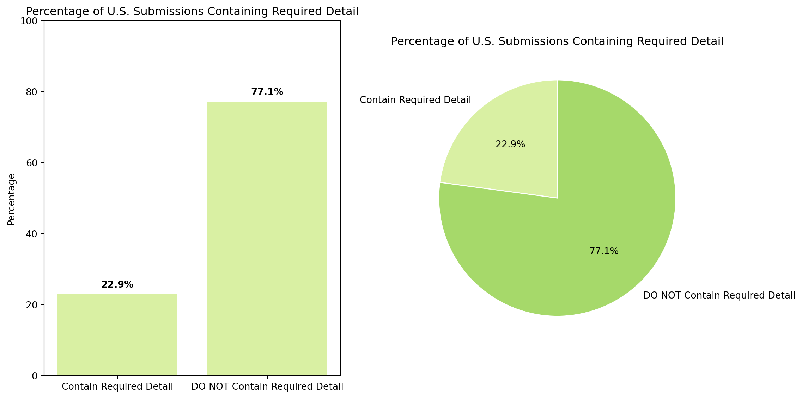
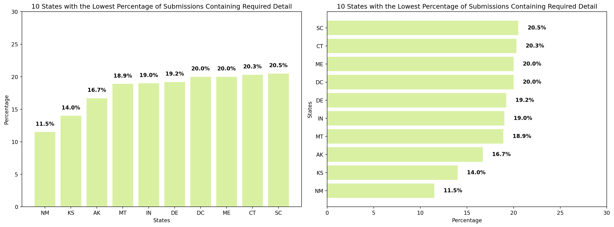
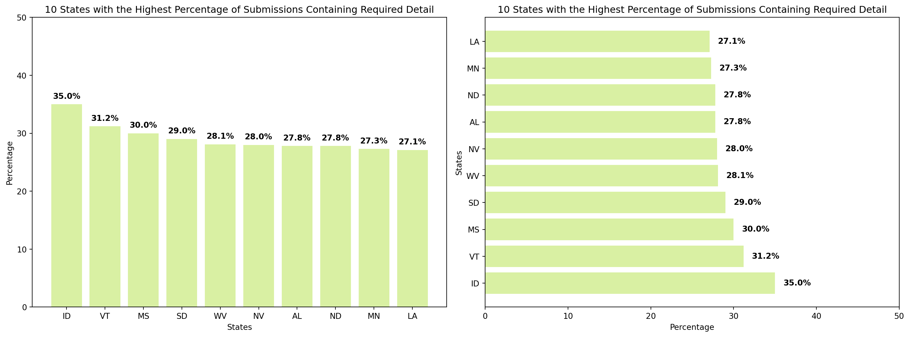

5131Corporate
Like we’re doing for the nonprofit sector, we’ll put together a summary of the important metrics and statistics we think should be included in our dashboard, based on our analysis of SEC data from the corporate sector.
This will include both the data itself and some options for visualizing it.
We’re working with two main SEC datasets:
- Numeric data (num.csv)—this includes information from the Balance Sheet, Income Statement, Cash Flows, Changes in Equity, and Comprehensive Income, plus any related footnotes.
- Submission data (sub.csv)—this contains text fields like company names, business addresses, and submission detail level.
For a deeper dive into these datasets and links to access them directly, check out this page: https://theundivideproject.github.io/Financial-Data-Exploration/website/index.html
Transparency & Accountability
Are companies meeting the required detail levels in their financial statement submissions?
The SEC uses a Boolean value to indicate if a company’s financial statements meet their ‘required detail’ level. It’s tough to give a clear definition of what that level looks like because it varies from company-to-company, but general guidelines can be found here: AICPA Principles and Criteria for XBRL Formatted Information. Submission detail can give insight into whether a company maintains high corporate governance standards and offers complete information to market stakeholders.
Number of U.S. Submissions Containing Required Detail:

10 States with the Lowest Percentage of Submissions Containing Required Detail:
| BA STATE | COUNT CONTAINING REQUIRED DETAIL | TOTAL COUNT | PERCENTAGE OF STATE CONTAINING REQUIRED DETAIL | |
|---|---|---|---|---|
| 32 | NM | 3 | 26 | 11.5 |
| 16 | KS | 17 | 121 | 14.0 |
| 0 | AK | 1 | 6 | 16.7 |
| 26 | MT | 7 | 37 | 18.9 |
| 15 | IN | 60 | 316 | 19.0 |
| 8 | DE | 32 | 167 | 19.2 |
| 7 | DC | 14 | 70 | 20.0 |
| 21 | ME | 5 | 25 | 20.0 |
| 6 | CT | 100 | 492 | 20.3 |
| 40 | SC | 16 | 78 | 20.5 |

10 States with the Highest Percentage of Submissions Containing Required Detail:
| BA STATE | COUNT CONTAINING REQUIRED DETAIL | TOTAL COUNT | PERCENTAGE OF STATE CONTAINING REQUIRED DETAIL | |
|---|---|---|---|---|
| 13 | ID | 21 | 60 | 35.0 |
| 46 | VT | 5 | 16 | 31.2 |
| 25 | MS | 9 | 30 | 30.0 |
| 41 | SD | 9 | 31 | 29.0 |
| 49 | WV | 9 | 32 | 28.1 |
| 33 | NV | 125 | 447 | 28.0 |
| 1 | AL | 22 | 79 | 27.8 |
| 28 | ND | 10 | 36 | 27.8 |
| 23 | MN | 102 | 373 | 27.3 |
| 18 | LA | 23 | 85 | 27.1 |

Percentage of Submissions Containing Required Detail by Region:
Northeast: CT, ME, MA, NH, NH, NY, RI, VT
Mid-Atlantic and Great Lakes: DE, DC, IL, IN, IA, KY, MD, MI, MN, NE, NC, ND, OH, PA, SC, SD, VA, WV, WI
Gulf Coast and Pacific Coast: AL, AK, AR, AZ, CA, CO, FL, GA, HI, ID, KS, LA, MS, MO, MT, NV, NM, OK, OR, TX, TN, UT, WA, WY
| BA REGION | COUNT CONTAINING REQUIRED DETAIL | TOTAL COUNT | PERCENTAGE OF REGION CONTAINING REQUIRED DETAIL | |
|---|---|---|---|---|
| 0 | Gulf Coast and Pacific Coast | 2624 | 11206 | 23.4 |
| 1 | Mid-Atlantic and Great Lakes | 1271 | 5600 | 22.7 |
| 2 | Northeast | 1231 | 5586 | 22.0 |